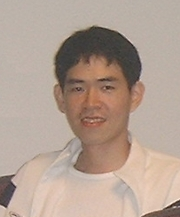

MDMKDD 2016
International Workshop on Multimedia Data Mining
In conjunction with 22nd ACM SIGKDD Conference (KDD 2016)
Augest 13 - 17, 2016, San Francisco, California, USA
The workshop will bring together experts in the analysis of digital media content, multimedia databases, knowledge engineers and domain experts from different applied disciplines with potential in multimedia data mining. A new theme of this edition of the workshop is to present and discuss how multimedia is integrated into people’s daily life. With the large growth of devices and data, we want to focus this workshop on mining large scale rich content in a networked society.
Topics of Interest
We encourage submissions on a variety of topics, including but not limited to:
Submission
Instructions
TBA.
Important Dates
- Paper Submission: TBA
- Author Notification: TBA
- Camera Ready Paper Due: TBA
- Workshop: TBA
Invited Speakers
TBA
Organizers
Organizing Committee
Aaron Baughman Email is a Senior Advanced Data Analytics and Software Engineer within IBM Special Events that includes Wimbeldon, French Open, Australian Open, The Masters, and etc. Previously, he was the technical lead on the first domain adaptation of Watson (Jeopardy!) and was embedded with the original DeepQA team. He is a prolific inventor with 30 patent pendings, 4 issued patents and leads an IBM Invention Disclosure Team. He runs the global IBM Public Sector Technical Community, initiated and co-chaired the first IBM Academy of Technology conference on biometric analytics at IBM Research, and founded IBM's virtual biometric community. His research interests include natural language processing, multimedia data mining, biometrics, genetic algorithms, and machine learning.
 Jiang (John) Gao
Email
is a Principal Scientist in Nokia Software and Services, focusing on technology innovation and content
strategies. He was a Principal Member of Research Staff in Nokia Research Center in California working on
multimedia content understanding, computational photography and augmented reality. He is serving on the
program committee of several conferences including IEEE International Symposium on Mixed and Augmented
Reality, IEEE International Conference on Multimedia & Expo. Prior to Joining Nokia in 2006, he was a
research faculty in Carnegie Mellon University’s Human Computer Interaction Institute, Robotics Institute,
and Computer Science Department, working on Informedia, HumanID, and multiple computer vision projects.
His research interests include multimedia and visual computing, personalized applications, and data
mining on mobile and web-based platforms. He holds six US patents and is the co-author of a textbook
on Joint Time-Frequency Analysis and Its Applications in Signal Processing. He obtained his Ph.D.
degree in 1996.
Jiang (John) Gao
Email
is a Principal Scientist in Nokia Software and Services, focusing on technology innovation and content
strategies. He was a Principal Member of Research Staff in Nokia Research Center in California working on
multimedia content understanding, computational photography and augmented reality. He is serving on the
program committee of several conferences including IEEE International Symposium on Mixed and Augmented
Reality, IEEE International Conference on Multimedia & Expo. Prior to Joining Nokia in 2006, he was a
research faculty in Carnegie Mellon University’s Human Computer Interaction Institute, Robotics Institute,
and Computer Science Department, working on Informedia, HumanID, and multiple computer vision projects.
His research interests include multimedia and visual computing, personalized applications, and data
mining on mobile and web-based platforms. He holds six US patents and is the co-author of a textbook
on Joint Time-Frequency Analysis and Its Applications in Signal Processing. He obtained his Ph.D.
degree in 1996.
 Jia-Yu (Tim) Pan Email is a software engineer at Google, Inc. He has received three best paper awards from the conferences ICDM 2006, ICDM 2005, and PAKDD 2004. His research interests include anomaly detection, data mining on multimedia and graphs, clustering techniques, and WWW technology. He has served on the program committee of several conferences, including this workshop on Multimedia Data Mining (MDMKDD) in conjunction with KDD 2006 and KDD 2007. He served as a co-chair for several workshops, including this workshop in conjunction with KDD 2008, KDD 2010, and KDD 2011. He received his Ph.D. degree from Carnegie Mellon University.
Shiyu Chang Email Shiyu Chang is a Ph.D. student at the University of Illinois at Urbana-Champaign under the supervision of Prof. Thomas S. Huang. He has wide range of research interests in data exploratory and analytics at large-scale. Specifically, his current research directions lie on building high performance and reliable systems with the help of the large-scale multi-modality information to solve complex computational tasks in real world. He received his B.S. at the University of Illinois at Urbana-Champaign in 2011 with the highest University Honor (Bronze Tablet Award). He graduated from the Department of Electrical and Computer Engineering (ECE) and obtained his M.S. degree in 2014. He is a recipient of the 2014-2015 ECE fellowship sponsored by Kodak. Most of Shiyu's research has been published in top data mining and computer vision venues. The paper Factorized Similarity Learning in Networks has been selected as the best student paper in ICDM 2014.
Program Committee
-
TBA